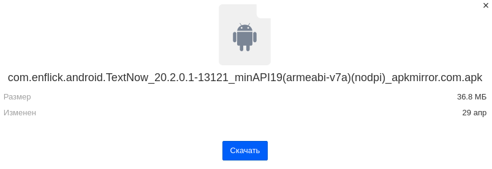
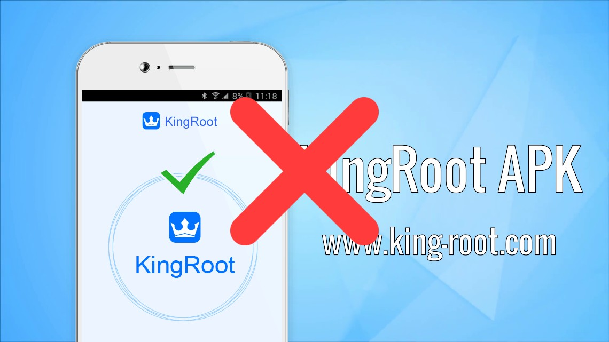
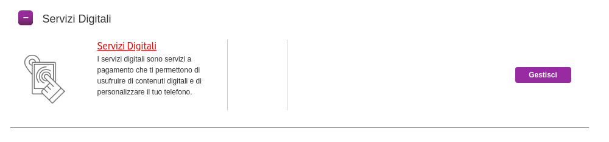
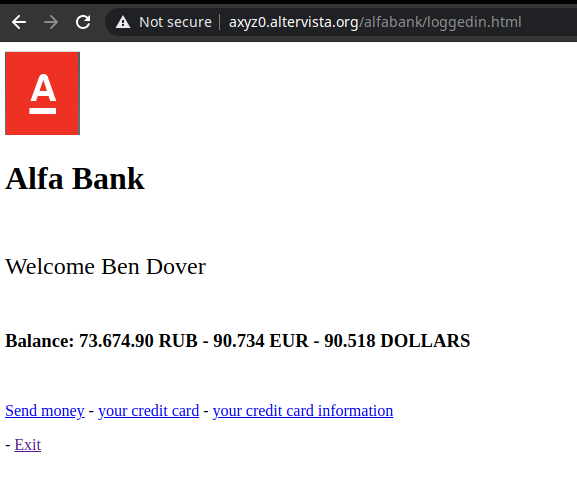

Raccomandazioni di sicurezza generali
1. Non installare APK senza prima averli scansionati
Gli APK possono contenere spyware, e avere il pieno controllo del dispositivo
e le sue periferiche (e.g. fotocamera).
Quando si scarica un APK da una fonte sconosciuta, è sempre consigliato
effettuare una scansione su virustotal.com

2. Non eseguire il root con applicazioni come KingRoot
Abilitare i permessi di root comporta alle applicazioni di avere accesso
completo ai file di sistema del dispositivo.
Se il root non viene installato correttamente, potrebbe danneggiare il
sistema operativo, che dovra' essere reinstallato.
Il metodo piu' sicuro per installare i permessi di root e' installando
una recovery (TWRP / OrangeFox) e installare Magisk

3. Abilitare il blocco dei servizi a pagamento del proprio operatore
In internet ci sono dei link che se cliccati attivano istantaneamente
un abbonamento sulla propria SIM Card.
Cio' puo' essere prevenuto attivando il blocco dei servizi a pagamento
direttamente dall'operatore o non avere credito nella SIM

4. Non immettere informazioni personali su siti web con dominio sospetto
Un tentativo molto comune di truffa è il Phishing.
Dei malintenzionati registrano dei domini come per esempio mioconto.sicurezzapostepay.it,
clonano il login di (per esempio) PosteItaliane, inviano questo link per e-mail o SMS
e attendono che qualcuno inserisca le sue credenziali per rubargliele.
Per prevenire ciò, bisogna ricordarsi che solitamente le banche non inviano mai messaggi
contenenti link, e che non chiedono mai i dati delle carte di credito.
